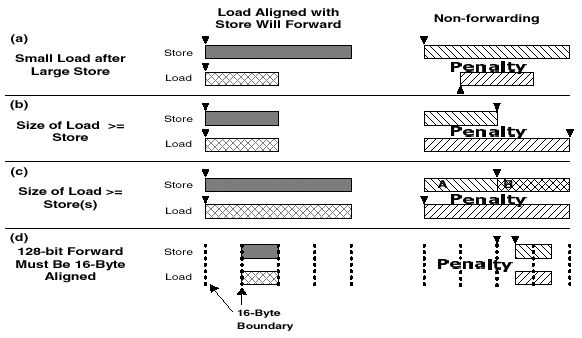

Store_Forwarding_Blocked 是一个警告。
为其发出 Store_Forwarding_Blocked 的指令在前一条将数据写入重叠内存空间的指令之后读取数据。如果以下情况之一属实，将发生此暂停：
读取指令和写入指令的目标内存地址不相同。
读取和写入指令的目标内存地址与相同的地址对齐，但读取的数据大于写入的数据。

如需有关详细信息，请参阅在线英特尔(R) (R) 奔腾(R) 4 处理器手册。
 备注
备注对于含“第三代数据流单指令多数据扩展指令集”(SSE3) 的英特尔(R) 奔腾(R) 4 处理器上，只同上述情形 b) 与 c) 有关。也就是说，仅在以下情况中才会发生惩罚：小数据元素的写入后跟相同地址的大数据元素读取。
 建议
建议使用以下指令之一读取要使用 MMX(TM) 技术指令处理的数据：
读取 64 位操作数的 MMX 技术指令（例如 MOVQ MM0, m64）。
操作四字内存操作数的任何 MMX 技术指令的寄存器-内存形式（例如 PMADDWD MM0, m64）。
使用写入 64 位操作数的 MMX 技术指令写入 64 位四字（例如 MOVQ MM0, m64）。
此示例将读取放在离写入很远的单独循环中，从而避免暂停：
原始代码 |
优化代码 |
|
|
|
在每一遍循环中，此代码将 2 个字节写入 array[i] 的地址，将 2 个字节写入地址 array[i] 的偏移量（即 array[i+1]），然后从地址 array[i] 读取 4 个字节。每次读取都导致一次暂停。 |
此代码在第一个循环内将所有的数据写入两个数组元素，从而避免暂停。 |
此示例将读取放在离它们前面的写入很远的位置，从而避免暂停。
原始代码 |
优化代码 |
|
|
|
在每一遍循环中，此代码将 2 个字节写入地址 array[i]，然后从地址 array[i] 的偏移量（即 array[i] + 1）读取 2 个字节。 |
此代码首先在一个循环内将所有的数据写入地址 array[i]，从而避免暂停。 |